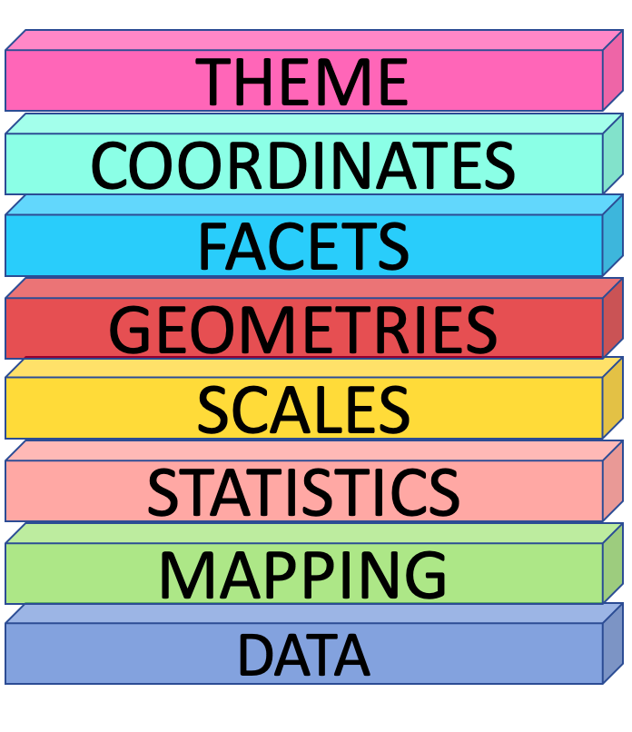
7 Data Visualization
In R, there are many ways to create visualizations, as it provides various built-in functions for generating charts and graphics. . The graphics package, which comes with R by default, includes basic functions for creating different types of plots, such as line graphs, scatter plots, histograms, and bar charts. In this approach, each type of graph has its own dedicated function.
However, when there are too many plotting functions to remember, managing them becomes difficult. Every time you need a new type of graph, you have to learn a new function. This challenge is what visualization expert Leland Wilkinson aimed to address through the Grammar of Graphics.
Instead of treating plots as separate, unrelated charts, the Grammar of Graphics provides a unified framework for creating visualizations using a consistent set of rules. This approach moves beyond simply naming charts (e.g., pie chart, line chart, scatter plot) and focuses on understanding their structure or anatomy. By using layered components, we can build effective visualizations in a more systematic way.
The key idea behind the Grammar of Graphics is that any plot can be explained using eight layered components. This theoretical design system serves as the foundation for the ggplot2 package in R, which is an implementation of these principles.
7.1 The ggplot2 API
The ggplot2 package structures plots using eight key components (layers):
In each layer, we aim to answer a specific question:
Data – What dataset should be used for the visualization?
Mapping (Aesthetics - aes) – How should the data be mapped to visual properties? (e.g., x-axis, y-axis, color, size)*
Statistics (stat) – Should any transformations or summaries be applied? (e.g., smoothing, binning, aggregation)
Scales – How should data values be translated into visual properties? (e.g., color gradients, axis scales)
Geometries (geom) – What type of plot best represents the data? (e.g., points, lines, bars)
Facets – Should the data be divided into multiple panels for better comparison?
Coordinates (coord) – Which coordinate system should be used? (e.g., Cartesian, polar)
Theme – How should the overall appearance of the plot be styled? (e.g., fonts, background, gridlines)
By layering these components, ggplot2 provides a flexible and structured approach to building effective visualizations
Now, let’s see how to create a plot using ggplot2.
Let’s start with the foundational layer: the data layer
7.2 Data Layer
This layer asks the question: What dataset should be used for the visualization?
In this example, I am going to use South Asian economic indicators from the World Bank, covering the years 1960 to 2017.
Download the dataset: SAeconomy.csv
Dataset Glossary (Column-wise)
Country: The country or region of the series.
GDP: Gross domestic product (in $USD February 2019).
Growth: Annual percentage growth in GDP.
CPI: Consumer price index (base year 2010).
Imports: Imports of goods and services (% of GDP).
Exports: Exports of goods and services (% of GDP).
Population: Total population.
For the initial exploration, I am going to filter the economic health data specifically related to Sri Lanka and analyze the country’s economic health .
library(tidyverse)── Attaching core tidyverse packages ──────────────────────── tidyverse 2.0.0 ──
✔ dplyr 1.1.4 ✔ readr 2.1.5
✔ forcats 1.0.0 ✔ stringr 1.5.1
✔ ggplot2 3.5.1 ✔ tibble 3.2.1
✔ lubridate 1.9.3 ✔ tidyr 1.3.1
✔ purrr 1.0.2
── Conflicts ────────────────────────────────────────── tidyverse_conflicts() ──
✖ dplyr::filter() masks stats::filter()
✖ dplyr::lag() masks stats::lag()
ℹ Use the conflicted package (<http://conflicted.r-lib.org/>) to force all conflicts to become errorsSAeconomy_data <- read_csv(here::here("data", "SAeconomy.csv" ))Rows: 464 Columns: 9
── Column specification ────────────────────────────────────────────────────────
Delimiter: ","
chr (2): Country, Code
dbl (7): Year, GDP, Growth, CPI, Imports, Exports, Population
ℹ Use `spec()` to retrieve the full column specification for this data.
ℹ Specify the column types or set `show_col_types = FALSE` to quiet this message.SLeconomy <- SAeconomy_data |>
filter(Country == "Sri Lanka")
SLeconomy# A tibble: 58 × 9
Country Code Year GDP Growth CPI Imports Exports Population
<chr> <chr> <dbl> <dbl> <dbl> <dbl> <dbl> <dbl> <dbl>
1 Sri Lanka LKA 1960 1409873950. NA 1.49 32.9 30.0 9874481
2 Sri Lanka LKA 1961 1444327731. NA 1.50 28.5 27.5 10111646
3 Sri Lanka LKA 1962 1434156379. 3.82 1.53 29.2 27.8 10352188
4 Sri Lanka LKA 1963 1240672269. 2.52 1.56 27.5 25.8 10597520
5 Sri Lanka LKA 1964 1309747899. 3.91 1.61 26.7 24.6 10849979
6 Sri Lanka LKA 1965 1698319328. 2.54 1.62 25.5 25.9 11110828
7 Sri Lanka LKA 1966 1751470588. 5.02 1.61 25.8 22.4 11380683
8 Sri Lanka LKA 1967 1859465021. 6.44 1.65 23.3 20.5 11657660
9 Sri Lanka LKA 1968 1801344538. 5.80 1.74 23.6 20.6 11937611
10 Sri Lanka LKA 1969 1965546218. 7.72 1.87 24.6 18.4 12214968
# ℹ 48 more rowsA ggplot function call begins with the ggplot() function.
ggplot()
This call is similar to taking a blank piece of paper to draw a plot, where you set the foundation for what will be visualized. In the data layer, you have to specify what dataset you want to use for the visualization. In this case, the dataset will be the economic health data for Sri Lanka.
ggplot(data = SLeconomy)
You’re still getting the same result because ggplot() doesn’t know how to work with the dataset until you tell it what to plot and how to map the data to the axes and visual elements.
This is done using the second layer, the Mapping layer.
7.3 Mapping Layer
In this layer you define how the data should be represented visually, such as which variables to map to the x-axis, y-axis, and other visual elements.
ggplot(data = SLeconomy,
mapping = aes(x = Year,
y = GDP))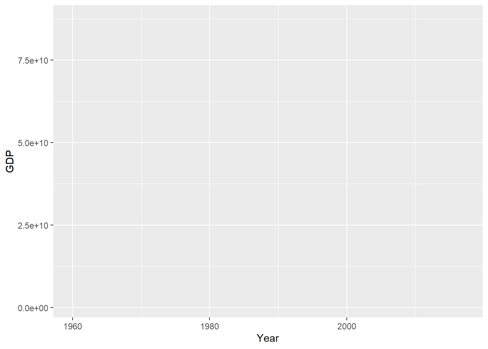
With the Mapping layer, we define what we want to see on the graph. For example, if I want to see the trend in the GDP series over the years, I select the relevant columns and map them to the x-axis and y-axis. This will label the axes with the selected variable names. However, you still can’t see a visual representation in the plotting panel. That’s because you need to specify how to draw the plot and what kind of geometry to use to represent the data values. This is where the Geometries layer comes in.
7.4 Geometries Layer
The Geometries layer is concerned with the shape of the data. In this case, since I have a time series, I can represent the data by using a line to show how the values change over the years.
We connect each layer with a plus sign (+), because it essentially “adds layers” to the existing plot, building on top of what was already defined.
ggplot(data = SLeconomy,
mapping = aes(x = Year,
y = GDP)) +
geom_line()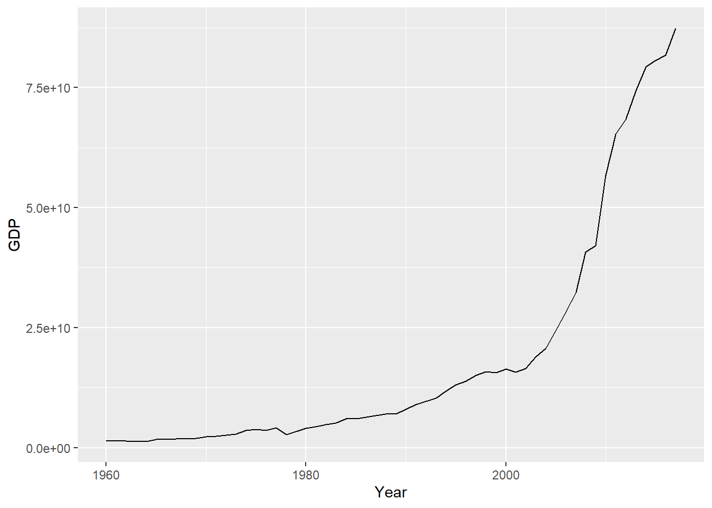
Although the grammar of graphics framework has 8 layers, only 3 are necessary to create a meaningful plot. The other layers are optional.
7.5 Visualize Data Like a Pro in ggplot2 with esquisse package
When you install R, it automatically adds some packages. One important package is the Esquisse package, which helps you explore and visualize your data interactively.
In RStudio, you can use the Addins menu to launch the esquisse. Select ‘ggplot2’ builder under the ESQUISSE option.
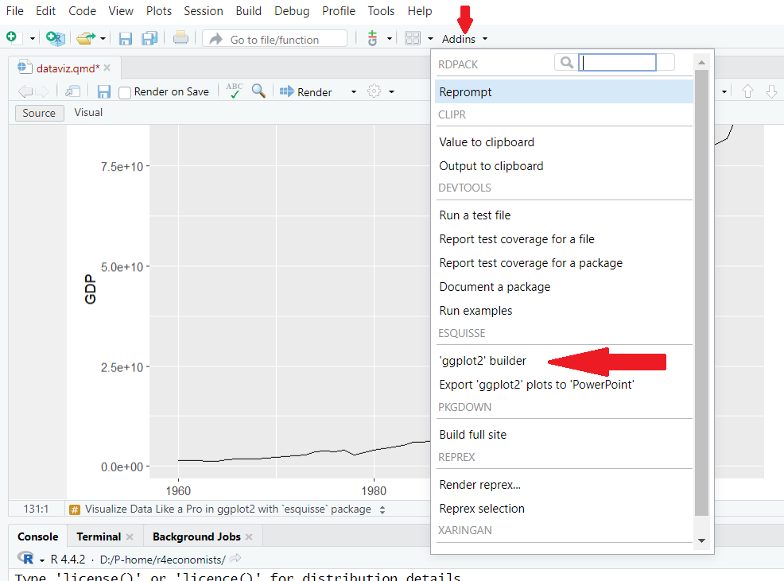
esquisse packageOr in the R console run:
esquisser()A window will appear for importing data. If you have active datasets in your current working directory, you can select the required dataset from the ‘Select a data.frame:’ dropdown menu under the Environment panel.
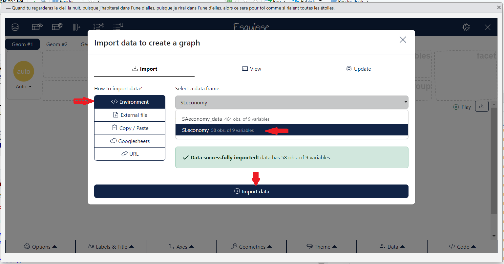
esquisse package: Import active dataframeIf you want to load an external file, go to the ‘External File’ panel, upload the file and select import.
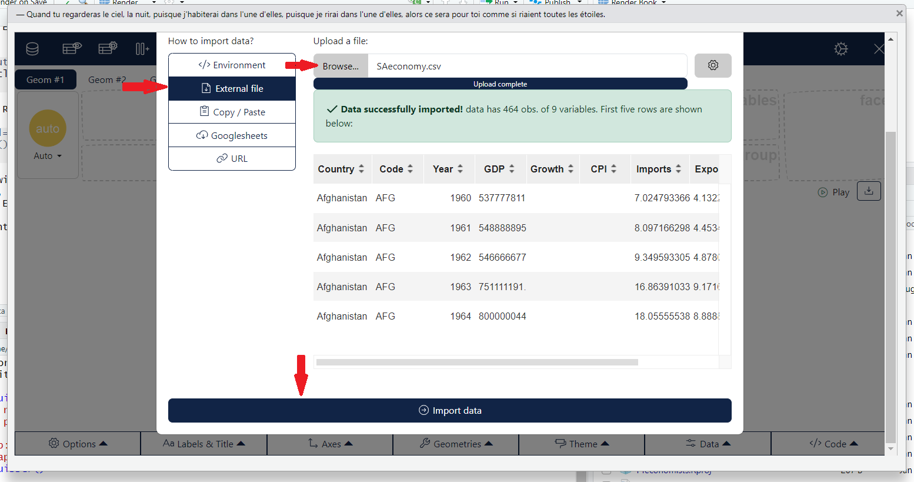
esquisse package: Import external datafileLet’s try to recreate the same plot we made earlier using the esquisse package.
To select aesthetics, click the gear icon in the top right corner, then drag and drop the options into the aesthetics boxes to create your plot.
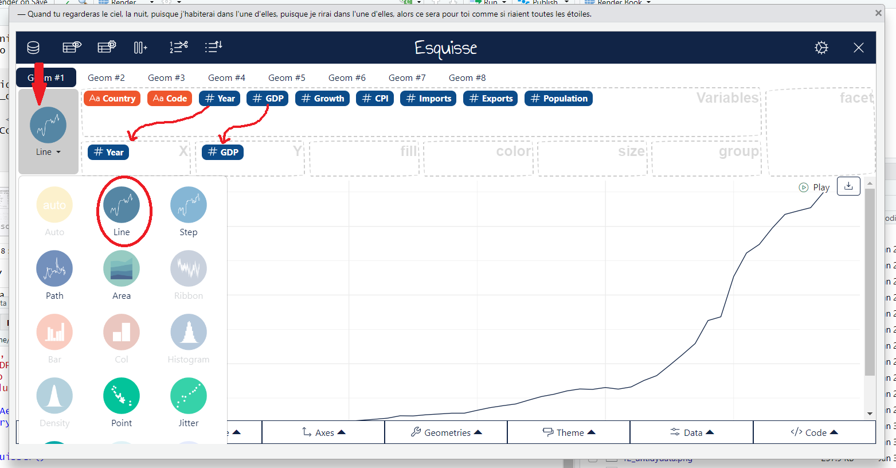
esquisse package: Create visual representationNow you can get the code for this visualization by using the ‘Reverse Engineer Your Visualizations’ option. Just select ‘Code’ to see it.
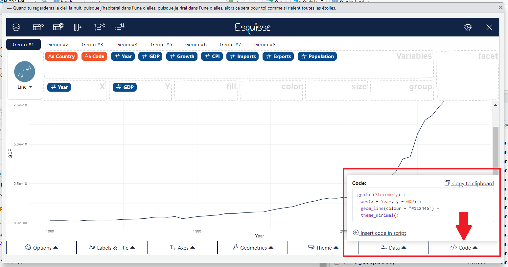
esquisse package: Create visual representation7.6 Statistics Layer
Sometimes, certain plots require the calculation of summary statistics. For example, to create a pie chart, you need percentages, or to produce a box plot, you need five summary statistics: the quartiles, minimum, and maximum. This is where the statistics layer comes in.
However, in practice, we rarely call the statistics layer directly. That’s because most of the statistical calculations are done automatically behind the scenes when creating geometric shapes. As a result, we don’t usually define them explicitly; the geom layer handles that for us. Each geom has a default stat.
| Statistics | Geometries |
|---|---|
stat_count |
geom_bar |
stat_boxplot |
geom_boxplot |
stat_identity |
geom_col |
stat_bin |
geom_bar, geom_histogram |
stat_density |
geom_density |
7.7 Scales Layer
The scales layer in ggplot2 defines how the data values are mapped to visual properties, such as colors, sizes, and positions in the plot. For example, you can change the scale of the x or y-axis, adjust color gradients, or set custom limits for the data values using the scales layer.
ggplot(SAeconomy_data) +
aes(x = Year,
y = GDP,
colour = Country,
shape = Country) +
geom_line() +
scale_x_continuous( breaks = c(1960, 1980, 2000, 2010, 2017)) +
scale_colour_viridis_d(direction = 1, option= 'plasma') +
scale_shape_manual( values = 17:24) Warning: Removed 40 rows containing missing values or values outside the scale range
(`geom_line()`).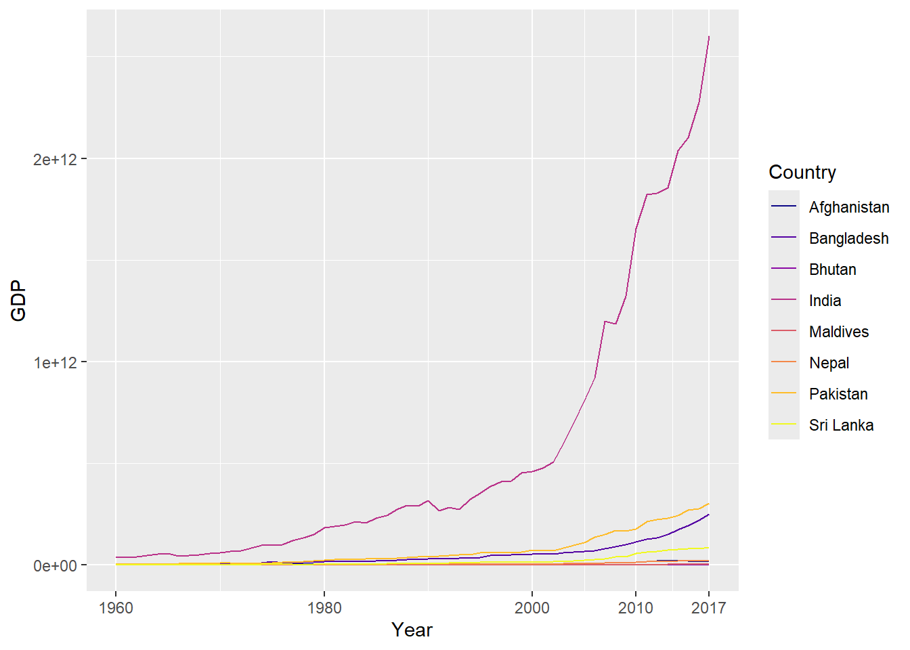
7.8 Facets Layer
The Facets layer answers the question: Should the data be split into multiple panels for easier comparison?
ggplot(SAeconomy_data) +
aes(x = Year, y = GDP, colour = Country) +
geom_line() +
scale_color_viridis_d(option = "plasma",
direction = 1) +
theme_minimal() +
facet_wrap(vars(Country))Warning: Removed 40 rows containing missing values or values outside the scale range
(`geom_line()`).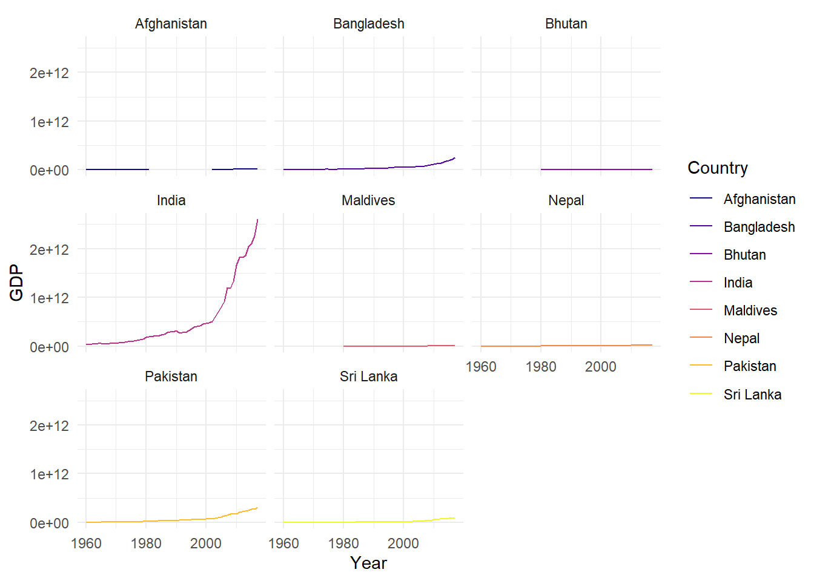
The code above was generated with the help of the esquisse package. I used ‘country’ as a facet variable to divide the data into multiple panels for better comparison.
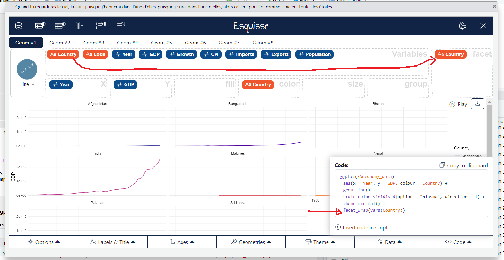
esquisse package: Create visual representationNow we can see that the y-axis follows a common scale, which makes it difficult to observe the temporal pattern for low GDP levels, as the series with higher values dominate the visualization. To address this, we can set the scales argument in facet_wrap to ‘free_y’.
ggplot(SAeconomy_data) +
aes(x = Year, y = GDP, colour = Country) +
geom_line() +
scale_color_hue(direction = 1) +
theme_minimal() +
facet_wrap(vars(Country), scales = "free_y")Warning: Removed 40 rows containing missing values or values outside the scale range
(`geom_line()`).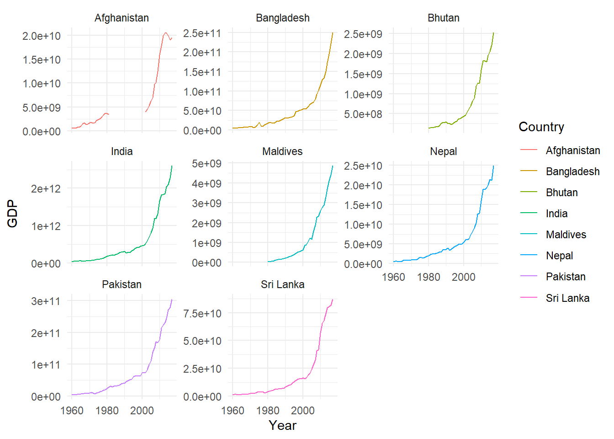
The code above was generated with the help of the esquisse package.
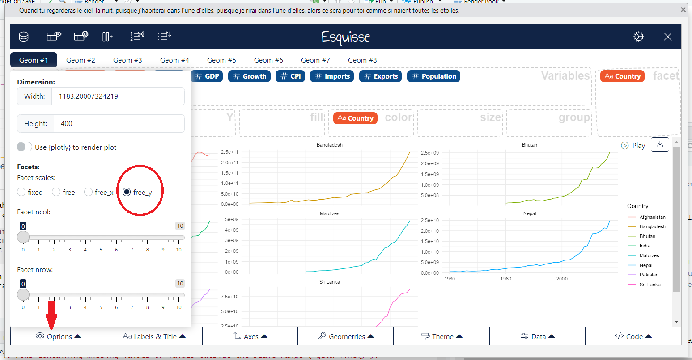
esquisse package: Create visual representation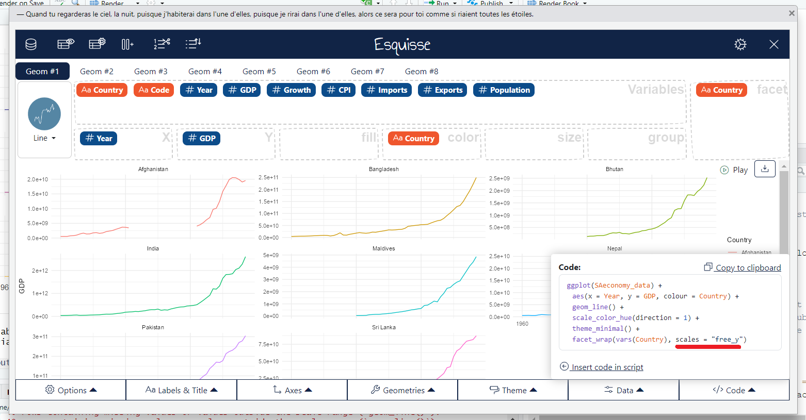
esquisse package: Create visual representation